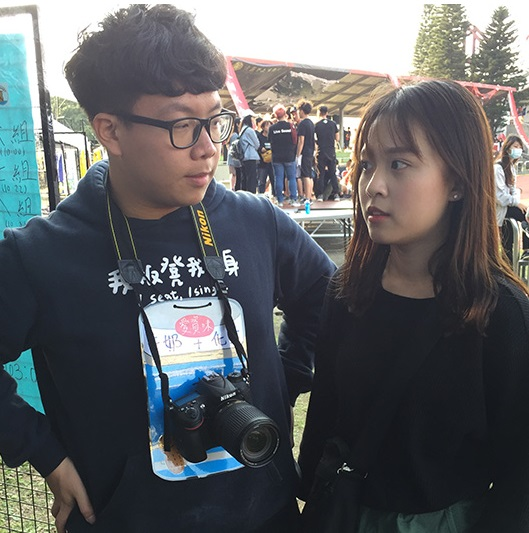

哈囉，我是曾宇辰！

我畢業於桃園的中壢高商，這是一所我非常喜愛的學校，有多喜歡呢？如果人生有第二次，我還是會選擇這所學校。
我是一名高職生，我高中的科系就是資料處理科，等於我上了大學是直升差不多的科系。我國中的時候就覺得對程式設計方面有興趣，桃園裡面有在學程式、名聲又比較好的就只有中壢高商，於是我就進來了這間職校。
跟高中生不一樣的是我們從進高職後，就等於被綁住你未來大學的走向了。考統測能上的幾乎都是科大，而且只能選擇同個類群的，如果要跨考類群或是考學測要比別人付出不知道多少倍的努力，所以要慎選，好險我至今為止都還滿喜歡這個科系的。
在高中三年，除了很專心的玩社團，我和我們班的兄弟們還做過了很多瘋狂的事情，我在聖誕節的時候扮成聖誕老公公、在學校裡面拍大大小小的影片、做一些總是會引人注目的事情，高二那年是我高中生涯的巔峰，那年高一到高三幾乎都知道我是誰，班導和任課老師都對我們又愛又恨，因為他們覺得我們很可愛，但是又很頑皮。
高中三年是我人生中最精彩的時光，雖然還是有些許課業壓力畢竟還要升學，但跟現在比起來已經算是無憂無慮了。這三年在中壢高商真的過得非常開心。
我現在就讀於桃園的中原大學，高職要升上普通大學有難度，要考跟前端國立科大差不多的成績，所以表示我很聰明哈哈哈。
上了大學之後突然覺得很迷惘，以前是沒得選擇，現在是可以選擇的東西太多了，就像是把被關在監獄50年的人放出來一樣，在小地方待習慣了突然獲得自由，沒有一個明確的目標，會直接失去方向。
上大學後我首先做的第一件事就是繼續精進自己的程式技術，大一的時候在課業上還滿認真的，但是後來系學會跟社團活動逐漸多了我就好像發現新大陸一樣，頭也不回的就往熱衷參與活動的路前進了。直到現在才兩年而已，我參加或舉辦的活動已經是高中的不知道幾倍，我的生活非常地充實，在社團跟系學會兩邊也都要當上幹部了，學業也沒有落後太多，目前我的大學生活還是在我的理想狀態內。
希望我可以在大學的這幾年，找到我接下來到底該往哪個方向走，不要一直處在迷惘中。
系學會
因為大一參加了系學會許多的活動，讓我燃起了對於舉辦這些活動的熱情，因此我在大二的時候加入了系學會，擔任執行秘書以及活動股股員、公關股股員，並與我的超級好夥伴們一同舉辦大大小小的系上活動，ex：資管之夜、資韻獎、迎新宿營……等。
吉他社
我在高中的時候就是吉他社的幹部，於是上了大學理所當然的也加入了吉他社。我的興趣就是玩音樂，主唱、吉他手、鼓手我都可以擔任，在吉他社的時光總是非常愉快。我熱衷於和我的主唱一起報名大大小小的表演以及比賽，在學校還會和社團同伴們共同舉辦成果發表會、吉他營、大活動音樂會……等有趣的活動。
系排
在高三的時候我看了一部叫排球少年的漫畫，就接觸到了排球這項運動。高三的時候就在亂亂打打出了興趣來，上了大學知道有排球隊之後就加了進去。經過系統的訓練之後覺得排球又更加有趣了，於是就打到了現在。我負責的位置是副攻，是一個要會防禦、要會攻擊、也要會舉球的位置。

我的興趣就是玩音樂，我最擅長吉他和木箱鼓，也可以唱歌，喜歡自彈自唱。除此之外我還對很多樂器都有興趣，像是薩克斯風、BASS、電子琴、合成器……等等。
我還喜歡創作，一直有在嘗試自己寫歌，但總是做出來後又覺得不好聽就把作品刪掉。
如果不談能不能吃飽、養家的話，我的目標會是往音樂這條路走，而不會從事大學學到的資管專業。能夠把興趣當飯吃應該是所有人的夢想。但是總是不能逃避賺錢養家這件事，所以我現在的目標還是時常練習撰寫程式的能力，並加強英文，讓多益提升到至少600分，這樣出去找工作好找薪水也可能比較高。
大學對自我的期許不外乎就是要把課業都顧好，包含這學期在內的五個學期都不要再有被當的科目了，英文可以加強到多益600分以上，有至少一次出國交換學生的經驗，要不斷的挑戰、磨練自己，讓自己成長，不要總是待在舒適圈、同溫層裡面。專業技能以及興趣希望都能夠有飛躍性的進步，專業技能方面希望我可以在四年內就變成可以獨當一面的網頁工程師，興趣方面我希望可以自己採譜、唱歌更好聽、cover編排的更加複雜，技巧練到熟到不行，寫出幾首好聽的歌。
☎電話：
0970750526
🏠地址：
桃園市中壢區青埔里新生路三段819巷11號
✉E-mail：
harry4536610@gmail.com